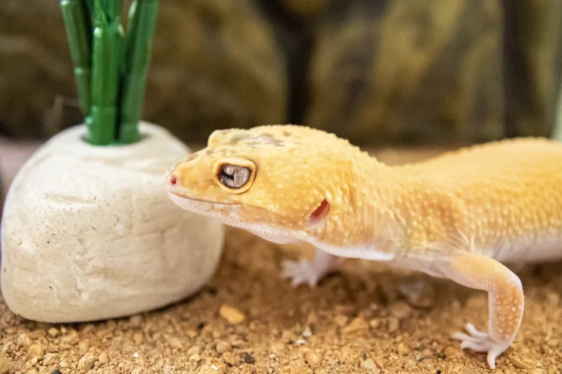

DOGS
CATS
BIRDS
SMALL PETS
AQUARIUMS
REPTILES
HORSES
BEST PET PRODUCTS
ABOUT US
REPTILES AND AMBPHIBIANS > GECKOS
Leopard Gecko: Species Profile
Characteristics, Housing, Diet, and Other Information
By
LIANNE MCLEOD, DVM
| Updated on 02/26/21

IN THIS ARTICLE
Behavior and Temperament
|
Housing
|
Heat
|
Light
|
Humidity
|
Substrate
|
Food and Water
|
Health Problems
|
Choosing
|
Different Species